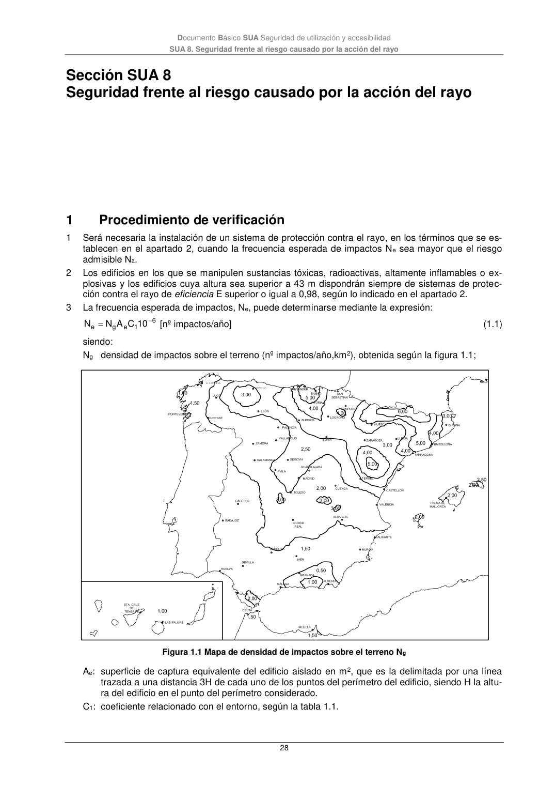

DB-SUA · 4 Señalización · versión 2022-06-14 · capa oficial
Formatos: JSON compacto · Markdown · PDF fuente
Ámbito del documento · texto del ámbito · documento y tablas
ID técnico a0099 · PDF pág. 27-28 · jerarquía no validada por persona · contrastado con el literal de la página 27 (marcador PDF); no validado por persona · padre: a0093
Señalización 1 Debe señalizarse, conforme a lo establecido en el código de la circulación: a) el sentido de la circulación y las salidas; b) la velocidad máxima de circulación de 20 km/h; c) las zonas de tránsito y paso de peatones, en las vías o rampas de circulación y acceso; Los aparcamientos a los que pueda acceder transporte pesado tendrán señalizado además los gáli- bos y las alturas limitadas. 2 Las zonas destinadas a almacenamiento y a carga o descarga deben estar señalizadas y delimitadas mediante marcas viales o pinturas en el pavimento. 3 En los accesos de vehículos a viales exteriores desde establecimientos de uso Aparcamiento se dispondrán dispositivos que alerten al conductor de la presencia de peatones en las proximidades de dichos accesos. Documento Básico SUA Seguridad de utilización y accesibilidad SUA 8. Seguridad frente al riesgo causado por la acción del rayo 28

PDF fuente redistribuible: copia fiel enlazada en esta página (SHA256 verificado).